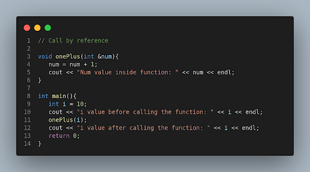
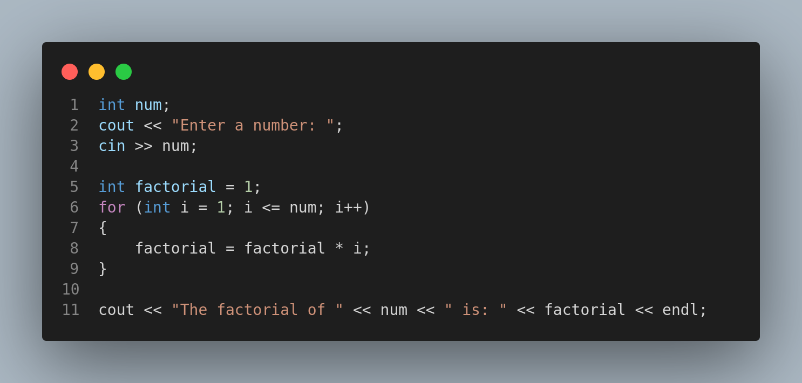
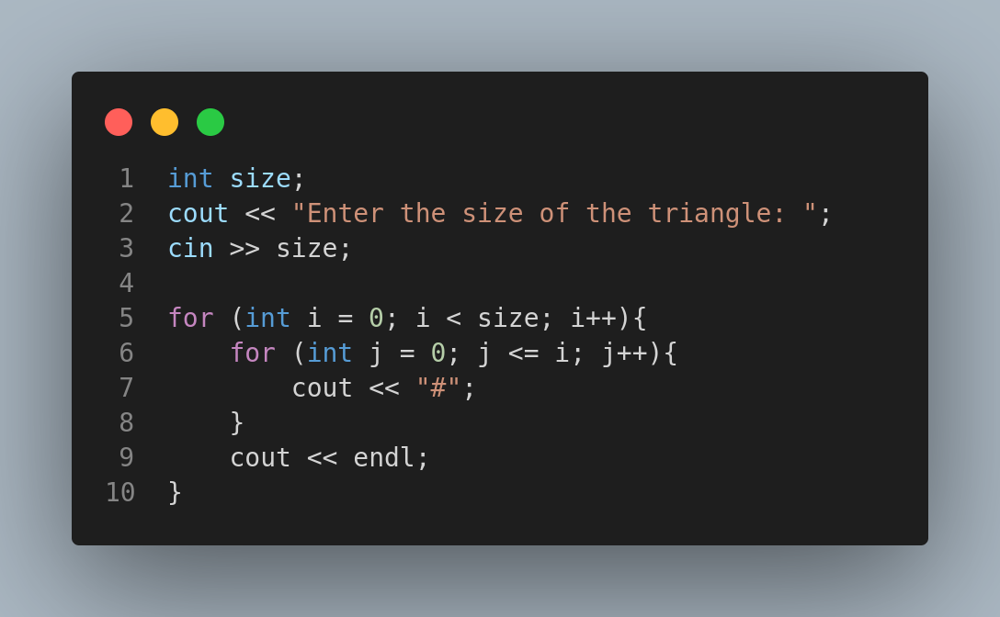
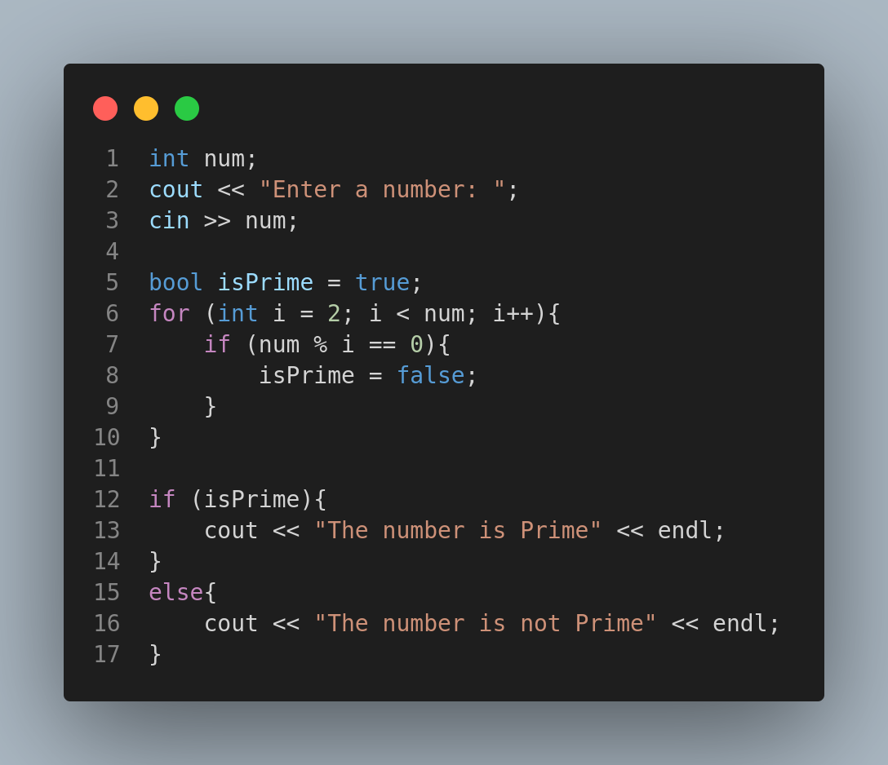
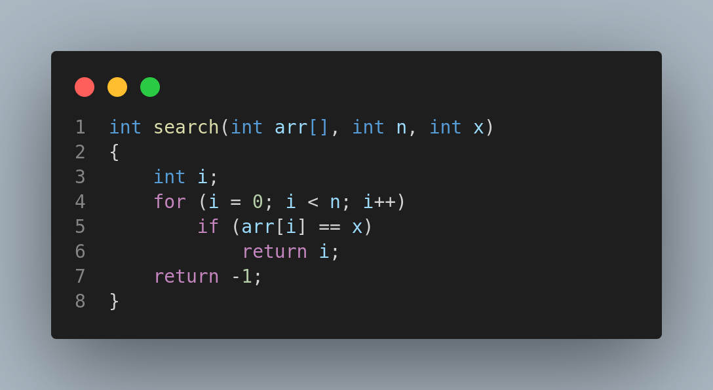

Hello Everyone!
Welcome to our Beginner's Workshop on C
Nibble Computer Society
Press
Spacebar for next slide. Esc or 'o' for overview.
https://stoic-allen-674671.netlify.app/#/
What is Programming?
- Telling a Computer what to do.
- How to do.
- When to do.
- Turn and face the cliff.
- Walk towards the cliff.
- Stop at the edge of the cliff.
- Left foot forward.
- Right foot forward
- Go back to step 1
Why is Programming useful?
- Improve Problem Solving Skills.
- Used in daily usage softwares.
- To extend the usability of computers.
- Great Career Options.
What are Programming Languages?
Programming languages are used by programmers (and developers) to communicate with the computers.
Computer do not understand any human languages, they require special instructions written in a certain way.
A Programming Language is that "way". It's easy enough for us to understand and write, and can be understood by a computer as well.
Need for different languages?
Sometimes you may want your program to run very fast and compute millions of instructions in milliseconds.
Sometimes you may want more flexibility and want to control every detail in your computer.
There can be uncountable scenarios to program a computer.
More languages help you choose for your own use case.
Getting Started With Programming!

Compilation
What is Compilation?
- Converting .cpp files into .exe files, which can be executed on the computer.
- .exe files are completely in machine language. We can't understand them.
How to compile?
- Demonstrating on local environment, using g++
- No need to compile on IDEs, they do it all in the background automatically.
- Everytime we make changes in the code, we have to check if the code is running correctly. For that, we compile to renew the .exe file.
| Compiler | Interpreter |
|---|---|
| A compiler translates the compiler source program in a single line. | An interpreter translates the source program line by line. |
| It is faster. | It is slower. |
| It takes less time. | It takes more time as compared to the compiler. |
| It is more efficient. | It is less efficient. |
| Compilers are large in size | Interpreters are smaller than compilers. |
Let's go Practical!
Data types and variables
What is data?
Data is a collections of facts, such as numbers, words, measurements, observations or just description of things.
There is no sense of programming without any data.
Programming is done to take input as data, process or manipulate data, or give output as data.
Need for different data types?
- Ease to program.
- Saves Memory.

Control Programming Flow
(Which statements to execute
before/after/when/until etc)
Statements written inside a pair of braces {...} are treated as a unified block of code.
If-Else statements
If-Else ladder
Nested if
Switch Statements

Loops
Need of Loops
Write a program to print numbers 1 to 10
While loop

Do-While Loop

For Loop

Infinite Loop
An infinite loop is a sequence of instructions that, as written, will continue endlessly, unless an external intervention occurs.
Arrays
What is an Array?
An Array is a collection of items stored at contiguos memory locations.
Need of an Array
Problem to store ages of 100 people and iterating over it
What are Arrays and their usefulness?
Limitations of Arrays.
- Static data structure
- All elements have the same data types
Types of Arrays
Pointers and references
Need of Pointers
Sometimes it’s better to give the address of your home rather than giving your home.
References
Functions
Need for Functions
- Modular
- We can define a code once and then use it as many times as we want in just one line.
Declaring and defining a function
Call by value vs Call by reference
Call by Value

Call by Reference
Errors
What are errors?
Whenever the program doesn’t work the way we wanted, that is said to be an error.
Types of Errors
Compilation Errors
- Which occurs during the Compilation Process of the program
- It occurs when the compiler reads something which it doesn’t understand.
- Example: Missing braces.
Runtime Errors
- These occur while the program is running.
- While the computer is running the file, there exists some instruction which can be understood by the compiler, but is not supported by the computer to run it.
- Example: Dividing a number by zero.
Syntax Errors
- These occur when incorrect syntax is written inside code.
- The compiler can’t understand it because it can only understand the code with the correct syntax, for which it is made.
- It is a type of compilation error.
- Example: Missing semicolon.
Logical Errors
- These errors will not be pointed out by your compiler, but they will create a variation in the desired output
- Example: Using a divide operator in place of multiplication operator.
Common techniques to resolve these errors
- Error line is given in the console by compiler
- Using debugger and breakpoints at faulty statements.
Common Programming Examples
Factorial
Pattern
Is Prime
Sorting
What is Sorting?
- Arranging elements in an order.
- Sorting Algorithms
Searching
What is searching?
- Searching is the process of finding a given value position in a list of values.
- It decides whether a search key is present in the data or not.
- It is the algorithmic process of finding a particular item in a collection of items.
Sequential Search
- Sequential search is also called Linear Search.
- Sequential search starts at the beginning of the list and checks every element of the list.
- Sequential search compares the element with all the other elements given in the list. If the element is matched, it returns the value index, else it returns -1.
Linear Search Function
Binary Search
- Binary Search is used for searching an element in a sorted array.
- It is a fast search algorithm with run-time complexity of O(log n).
- Binary search works on the principle of divide and conquer.
- This searching technique looks for a particular element by comparing the middle most element of the collection.
- It is useful when there are a large number of elements in an array.
That's All Folks
For Any Queries

Thank You
Nibble Computer Society